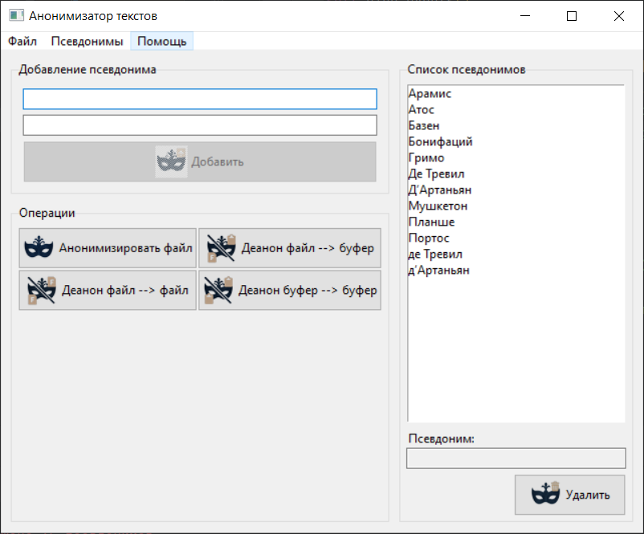

Важно о конфиденциальности данных
При анонимизации и деанонимизации все операции выполняются только на вашем компьютере. Программа не отправляет тексты, документы, содержимое буфера обмена и файлы словаря псевдонимов ни в интернет, ни в какие внешние сервисы.
Единственное, что может покинуть ваш компьютер, — это текст, который вы сами копируете и вставляете в ИИ-чаты, почту или другие системы.
Назначение программы
«Анонимизатор» предназначен для скрытия конфиденциальных данных в текстах и документах перед передачей их в ИИ-чаты, по электронной почте или в любые сторонние сервисы.
Программа заменяет указанные фрагменты текста (например, фамилии, названия организаций,
адреса, номера договоров) на псевдонимы в квадратных скобках, например:
Иванов → [ФИО001] или [ЗАМЕНА001].
После получения ответа от ИИ вы можете деанонимизировать текст и вернуть исходные данные.
Поддерживаются следующие форматы файлов:
- Текстовые файлы
.txt; - Документы Word
.docx; - Документы Word старого формата
.doc(при наличии установленного компонентаtextract).

Основные возможности
- Ведение словаря замен «исходный текст → псевдоним» в одном или нескольких JSON-файлах.
- Работа с несколькими файлами словаря: для разных клиентов, дел или типов документов можно заводить отдельные файлы.
-
Автоматическая генерация псевдонимов вида
ЗАМЕНА001,ЗАМЕНА002или с вашим префиксом (например,ФИО001,ОРГ001). -
Анонимизация файлов
.txt,.docx,.docс созданием нового файла и добавлением суффикса_анонимили нумерованных вариантов_аноним001,_аноним002. -
Деанонимизация файлов с выводом результата:
- в буфер обмена;
- или в новый файл с суффиксом
_деанон.
- Деанонимизация текста прямо из буфера обмена, без работы с файлами.
-
Автоматическое сохранение словаря и создание резервных копий
*.json.bakдля активного файла словаря. - Запоминание положения окна и последнего каталога для открытия файлов.
- Главное меню с доступом ко всем операциям и встроенная справка («Помощь» → «Справка (руководство пользователя)»).
Тренировочный полигон: «Три мушкетёра»
Чтобы не экспериментировать сразу на боевых договорах и доверенностях, в комплект программы включён безопасный тренировочный набор:
-
документ
Три мушкетера (отрывок).docx— художественный текст для демонстрации работы; -
словарь
pseudos_three_musketeers.json— файл псевдонимов, подобранный именно под этот отрывок.
Откройте этот словарь через меню «Псевдонимы» → «Открыть файл псевдонимов...», затем анонимизируйте файл «Три мушкетера (отрывок).docx» — и вы получите наглядный пример того, как программа работает от первой до последней замены.
Базовый словарь русских имён и фамилий
В каталоге с внутренними файлами программы находится
словарь pseudos_base.json.
В нём заранее подготовлены псевдонимы для наиболее распространённых
русских фамилий, имён и отчеств.
Его удобно использовать как базовый:
- подключить как активный словарь;
- при необходимости дополнить своими записями;
- при помощи пункта меню «Сохранить файл псевдонимов как...» превратить в отдельный словарь под конкретный проект или дело.
Это позволяет сразу закрыть большую часть типичных ФИО и сосредоточиться на специфичных для вашего кейса данных.